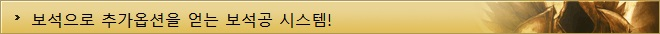

디아블로3 가이드
| 기초정보 | 인터페이스 | 단축키 | 퀘스트 |
|---|---|---|---|
| 제작 | 대장장이 | 보석공 | 점술가 |
| 기타 | 직업선택 | 지도 | |

보석공은 전작의 큐브를 이용한 조합 시스템으로 보석들을 조합한다는 점에서 비슷하지만 자세히 살펴보면 일반적인 mmorpg의 제작 시스템과 더 가깝습니다.
레시피가 존재하며 제작을 하는 엔피씨가 따로 존재하고, 상위 아이템을 제작하기 위해서는 제작의 레벨을 올리는 행위를 해야만 합니다.
▲ 보석 조합하러 자주 들리게 될 곳이다.
아이템에 추가 옵션이 필요하다구요? 보석공을 찾아가 보석을 업그레이드 하고 홈을 파서 원하는 옵션의 보석을 장착하면 되고, 혹시 보석을 잘못 넣으셨다면 보석공에게 다시 빼내어 달라고 부탁 하면 됩니다!
▲ 각종 보석들을 만들수 있다.
재료인 하위 보석들을 얻기 위해서는 직접 필드에 나가 악마들을 사냥하면서 획득하거나, 하위 보석들로 제작을 하여 얻을 수 있습니다.
디아블로3의 보석공은 12단계의 과정을 거쳐 성장을 합니다.
단계별 명칭은 수습생, 직공, 기능공, 숙련공, 달인, 명인, 대가, 거장, 명장, 불세출로 분류되어져 있고, 확장팩으로 11단계 초인과 12단계 지존의 명칭이 추가되었습니다. 상위의 보석을 제작하려면 보석공의 레벨을 높여주어야 합니다.
보석공의 레벨을 높이기 위해서는 초반엔 골드를 투자하고 그 이상부터는 골드와 아이템이 필요하며, 작업장은 레벨이 상승함에 따라 모습에 변화를 보입니다.
▲ 단계별 보석공 작업장의 변화 모습